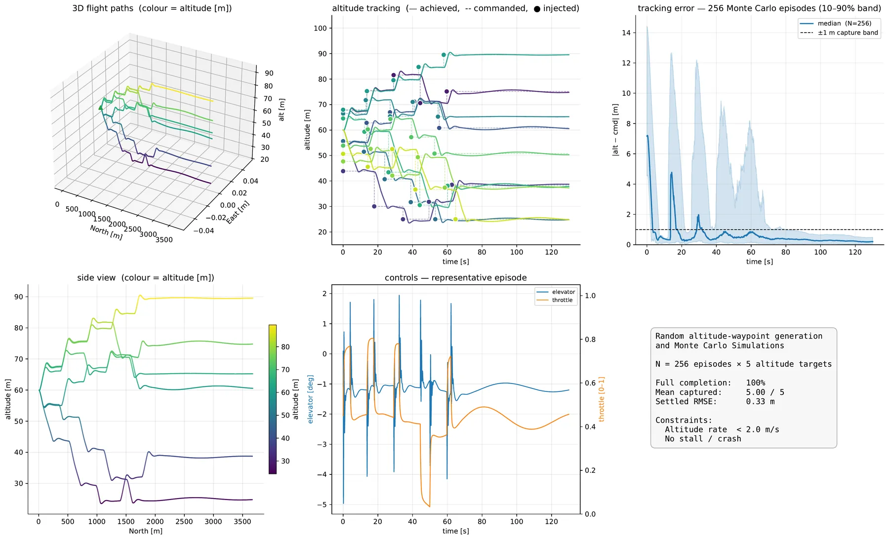

Simulation framework + controller benchmark2026
FALCON-S
Fixed-wing ground-effect Aerodynamics Simulator and Flight Control Learning Suite
X-Plane render
Airship V7 in ground effect
FALCON-S is a GPU-parallel, six-degree-of-freedom simulator and controller benchmark for fixed-wing aircraft flying close to the ground. It models ground effect, actuator and sensor dynamics and Dryden turbulence across five airframes, and drives reinforcement learning (PPO, SAC, TD3) and classical control (LQR, MPPI) through one command interface and one plant, so a comparison measures the controller and not the task encoding.
Warp backend throughput16,384 parallel environments on one RTX 4090
19.5M steps/s
Against NeuralPlaneat 10⁶ environments: 67.1 M against a published 5.0 M steps/s
13.4×
PPO altitude policy150 M environment steps of training, wall clock
<5min
Agreement with JSBSimPearson r on altitude, pitch rate and airspeed, h₀ = 1 m, ground effect off
0.9999
OverviewAgent module · environment module
One plant, one command interface, five controllers
Simulators built for pilots are hard to run at scale, and simulators built for learning tend to drop the physics that matter near the ground. FALCON-S keeps ground effect, actuator lag, sensor imperfection and turbulence in the loop and still steps tens of millions of environments per second.
![Architecture diagram. The agent module holds LQR, MPPI, PPO, SAC and TD3 controllers that train and evaluate on CPU or GPU, scored by RMSE, mean error, overshoot, settling time and energy. The environment module holds flight tasks (fixed and dynamic altitude keeping, 2D and 3D trajectory following), core physics (actuators, sensors, ground effect, wind and turbulence, atmospheric pressure, aerodynamics), PyTorch, SciPy and Warp backends, OpenVSP-derived aerodynamic coefficients and five aircraft models. Validation runs against JSBSim and X-Plane.](assets/img/architecture.webp)
Recorded flights2 airframes × 4 maneuvers × 5 controllers
Five controllers fly the same command stream
A maneuver here is a stream of bank, climb-rate and airspeed commands, not a path to follow. All five executors receive the identical stream and drive the same plant. These are recorded simulator tracks. The ribbon spans the wingtips, so it twists as the aircraft banks.
The replay shows the median run of each cell by bank RMSE: of three training seeds for PPO, SAC and TD3, and of five sampling draws for MPPI. The LQR is deterministic and flown once. The table gives the published mean and spread across all runs.
BenchmarkAltitude · attitude · ground effect · robustness
What the benchmark measures
Every cell runs on identical conditions: the same airframe model, the same actuator and sensor models, the same reference. Learned methods are averaged over three training seeds, MPPI over repeated sampling draws, and every mean is reported with its spread.
Task 1Altitude acquisition and hold
Reach a commanded altitude, then stay there
Each episode starts 12 to 18 m above or below a commanded altitude between 20 and 100 m, and every controller follows the same rate-limited reference. Survival counts episodes that end without a crash or a stall. Acquisition counts those that also reach the target and hold it within 1 m.
One episode per controller, target 60 m
Illustrative single episodes, not the scored protocol (the table below scores 200 episodes per cell). Flown for this page with the shipped checkpoints and the benchmark's own environment and reference: first training seed for the learned policies, sampler seed 0 for MPPI. The dashed line is the commanded reference, ramping at 2 m/s, and the shaded band is the ±1 m capture tolerance.
Mean ± standard deviation across three training seeds (learned) or three sampling sweeps (MPPI); the LQR is a deterministic law swept once. Error metrics are means over surviving episodes. Learned policies and MPPI are scored on the GPU plant and the LQR on the CPU reference plant, validated to single-step parity.
- PPO acquires every episode on both airframes.It is the only method to do so. SAC and TD3 lose 7 to 17 % of theirs, and SAC on the V7 survives 0.83 while acquiring only 0.50.
- The LQR is the most precise, where it arrives.Its settled error on the V7 is 2.8 × 10⁻⁷ m, five orders below the best learned policy. On the Ranger it acquires only half the episodes.
- MPPI flies through the target.On the V7 it survives 93 % of episodes and acquires 1 %, overshooting by 41.5 m. Its cost has no vertical-speed term inside a one-second preview, so the built-up climb rate stays invisible.

Task 2Attitude-command tracking
Four maneuvers, bank error in degrees
Each stream is generated from its own airframe's envelope, so a maneuver name means a comparable difficulty, not a comparable geometry. Each cell gives bank-angle RMSE as mean ± sd across runs and the time spent inside the ±8.6° band. Select a cell to fly it above.
- PPO stays in the band on all eight cells.Bank RMSE of 0.4 to 2.3°, and the most repeatable: its seed spread never exceeds 0.21°.
- MPPI is the most accurate where it converges.It holds three V7 maneuvers to 0.2–0.7°. A single flight is one draw, though: five draws of the Ranger s-turn range from 0.3 to 34.3°.
- SAC and TD3 track an order of magnitude looser on the V7.Neither leaves the envelope. SAC fails through a tremor about the command, TD3 through a limit cycle at a 0.6 s lag.


Ground effectThrust required against height over span
Near the surface, the same flight costs less thrust
Under a stabilising controller, ground effect changes the thrust needed to fly a trajectory rather than the trajectory itself. Bring the aircraft down toward the water and read the saving at each height-over-span ratio h/b.
Airship V7 · front view, to scale
Change in thrust to hold altitude
The measured saving exceeds the prediction because the prediction holds the lift coefficient fixed while the aircraft re-trims. Ground effect raises lift, the trim angle of attack falls and drag falls further: with the V7 angle of attack frozen at its out-of-ground-effect 2.14° the drag is 57.8 N, against 54.4 N when it re-trims to 1.68°.
Settled altitude error stays below 0.19 m on the V7 and 0.03 m on the Ranger with the correction on or off. The A0S is offered 22.5 % at h/b = 0.25, but its altitude policy does not hold any band below h/b = 2.
RobustnessPPO attitude executor · four disturbance families
Noise is free, latency is expensive, wind ends runs
The PPO executor flies all four maneuvers under one disturbance family at a time, at three severities set in physical units. A disturbance corrupts what the policy sees or commands; every metric comes from the true simulator state.
Airship V7
Volantex Ranger
| Family | Mild | Medium | Severe | Models |
|---|---|---|---|---|
| Sensor noise | φ,θ 0.5° · p,q,r 1°/s | 1.0° · 2°/s | 2.0° · 5°/s | Gaussian floors per channel, also on Va, α, β, ż |
| Sensor delay | 20 ms | 40 ms | 80 ms | Estimator and sensor-pipeline latency |
| Action delay | 20 ms | 50 ms | 100 ms | Flight computer, link and servo dead-time |
| Turbulence | σu/Va 0.05 | 0.10 | 0.15 | Six-component Dryden field, MIL-F-8785C |
- Sensor noise costs almost nothing.Bank RMSE holds at 2.0° on the V7 and moves from 1.3 to 1.4° on the Ranger across the whole grid: the executor averages over a state it can see repeatedly.
- Both latencies cost the same.At the severe grid the V7 reaches 20.6° (sensor) and 21.7° (action), an order of magnitude above nominal. This is the classical dead-time penalty on an attitude loop.
- The airframe reorders the families.The Ranger absorbs both latencies to the medium grid with no loss, yet departs first in wind: all four maneuvers end early at σu/Va = 0.15.
SynthesisRanks from the altitude and attitude tables
No method orders consistently
Rank the five controllers on four criteria taken from the two tables and the order changes at every step. MPPI is the most accurate attitude executor yet acquires neither commanded altitude. The LQR is the most precise regulator yet acquires half the episodes on one airframe. PPO is the most consistent rather than the most accurate.
SimulatorEnvironment module
Inside the plant
Full 6-DoF rigid-body dynamics in a north-east-down frame, with OpenVSP-derived aerodynamics, semi-empirical ground effect, actuator dynamics, configurable sensors and Dryden turbulence. The CPU reference, PyTorch and Warp backends implement the same equations, validated to single-step parity.
Rigid body
Newton–Euler equations in the body frame, attitude as a unit quaternion, integrated at Δt = 10 ms with Euler or RK4.
Aerodynamics
Coefficients in α, β and surface deflection, computed from each airframe's OpenVSP model and fitted to polynomials that run inside GPU kernels.
Ground effect
Phillips–Hunsaker lifting-line corrections, with μL, μD functions of h/b, taper and aspect ratio. Closed form, so no panel method or CFD in the loop.
Actuators
Servos second order at ωn = 10 rad/s, ζ = 1/√2; motors first order with τ = 0.2 s electric and 3 s piston. Saturation at ±20° elevator, ±15° aileron and rudder.
Propulsion
Propeller momentum theory with per-airframe constants. Per-motor throttle, mounting and spin direction give differential thrust and torque reaction.
Atmosphere and wind
Dryden turbulence per MIL-F-8785C, scale lengths re-evaluated every step at the current altitude. Constant wind and ISA density. Off during training unless randomisation is requested.
SensorsGPS · attitude · gyroscope
What the controller actually sees
Each sensor channel can carry noise, bias, scale-factor error, quantisation, a reduced sample rate and transport delay. The trace below is the commanded-bank response of the PPO executor on the V7 figure-of-eight; move the sliders to degrade its measurement. The degradation is drawn in the browser to illustrate the sensor model; it is not a simulator rollout.
GPU backend performanceRTX 4090 · Ryzen 9 7950X · 10 CUDA-fenced trials
Simulation stops being the bottleneck
The Warp backend scales near-linearly across the widths RL training uses and peaks near 2 × 10⁵ environments before it becomes bandwidth-bound. Simulation then accounts for under 10 % of training wall clock; gradient updates set the rest.
| Backend | Envs | Env-steps / s | Speed-up vs one CPU env |
|---|---|---|---|
| Python / SciPy, CPU | 1 | 589 | 1× |
| PyTorch, GPU | 16,384 | 2,586,610 | 4,390× |
| Warp, GPU | 16,384 | 19,461,717 | 33,029× |
| Warp, GPU | 262,144 | 73,640,000 | peak |
| Warp, GPU | 1,048,576 | 67,070,000 | 13.4× NeuralPlane |
Cross-simulator validationJSBSim · X-Plane
Checked against two independent simulators
With ground effect off, free-flight trajectories match JSBSim almost exactly. With it on at 1 m, they diverge in the way the physics predicts, because JSBSim does not model ground effect.
| Zero-input free flight | Altitude | Pitch rate | Airspeed |
|---|---|---|---|
| h₀ = 1 m, ground effect on | 0.9999 | 0.9989 | 0.9480 |
| h₀ = 1 m, ground effect off | 0.9999 | 0.9999 | 0.9999 |
| h₀ = 10 m | 1.0000 | 0.9885 | 0.9997 |
| h₀ = 100 m | 0.9996 | 0.9975 | 0.9973 |
JSBSim. Pearson correlation between the two simulators under identical zero-input conditions. The lower airspeed correlation with ground effect on is the altered drag that JSBSim does not reproduce, which isolates the correction as an aerodynamic effect rather than a numerical artefact.
X-Plane. Its flight model is closed, so the test is controller transfer: a controller tuned in FALCON-S is closed around the X-Plane aircraft through XPlaneConnect, from the same configuration and initial conditions. The same interface renders the footage at the top of this page.
Both harnesses are in the repository: tools/jsbsim_validate and tools/xplane.
AirframesJSON configuration · OpenVSP geometry
Five airframes, from a 1.6 m RC plane to a light aircraft
Each airframe is a JSON file: geometry, mass and inertia, control-surface layout, propulsion and sensors. The benchmark tables use the Airship V7, the ground-effect prototype the framework was built around, and the Volantex Ranger, a widely flown electric RC airframe. Wingspans below are drawn to one scale.
Get startedPython 3.10 · CUDA 12.6 · MIT licence
Train, evaluate, reproduce
The Warp plant needs an NVIDIA GPU; falcons check and the NumPy reference plant run without one. Runtimes below are for an RTX 4090.
# anonymized repository, as a ZIP $ curl -L -o falcon-s.zip \ https://anonymous.4open.science/api/repo/rl-control-wig-aircrafts-1D52/zip $ unzip falcon-s.zip -d falcon-s && cd falcon-s $ bash scripts/setup_venv.sh # venv, lockfile, editable install, falcons check # or in Docker $ docker build -t falcons . $ docker run --rm --gpus all falcons
# 3 algorithms × 2 tasks × 5 airframes × any seed $ falcons train --algo ppo --task altitude \ --plane Airship_V7 --seed 0 # learned or classical, same interface $ falcons eval --algo ppo --task altitude \ --plane Airship_V7 --plot $ falcons eval --algo mppi --task attitude \ --plane Volantex_Ranger --maneuver circle
$ falcons benchmark altitude # 2 h 11 $ falcons benchmark maneuvers --refresh # 21 min $ falcons benchmark ground-effect # 3 min $ falcons benchmark robustness # 9 min $ falcons benchmark throughput # 6 min $ falcons tables $ falcons reproduce --out DIR # re-fly everything, diff against results/
eval is the loop benchmark composes, so a cell printed by eval is the cell that lands in the table.Citation
BibTeX
@misc{anonymous2026falcons,
title = {{FALCON-S}: Fixed-wing ground-effect Aerodynamics
Simulator and Flight Control Learning Suite},
author = {Anonymous},
year = {2026},
note = {Under double-blind review},
url = {https://anonymous.4open.science/r/rl-control-wig-aircrafts-1D52}
}